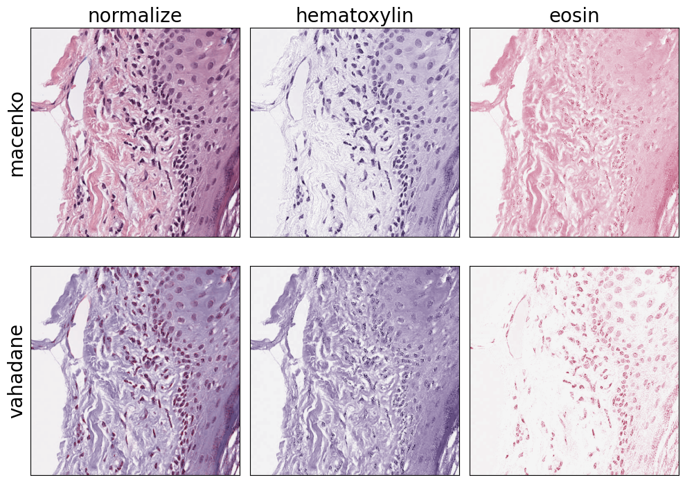
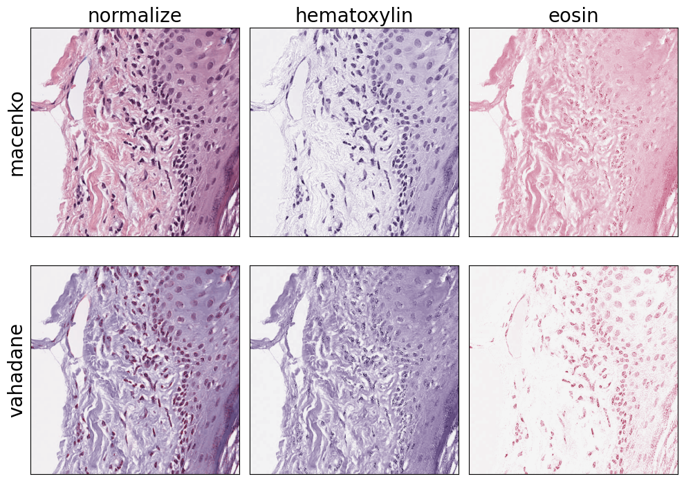

AnVILWorkflow application: Image processing by PathML
Sehyun Oh
April 13, 2023
Source:vignettes/pathml_preprocessing.Rmd
pathml_preprocessing.RmdOverview
The AnVIL project is an analysis, visualization, and informatics cloud-based space for data access, sharing and computing across large genomic-related data sets.
For R users with the limited computing resources, we introduce the AnVILWorkflow package. This package allows users to run workflows implemented in Terra without installing software, writing any workflow, or managing cloud resources. Terra is a cloud-based genomics platform and its computing resources rely on Google Cloud Platform (GCP).
Use of this package requires AnVIL and Google cloud computing billing accounts. Consult AnVIL training guides for details on establishing these accounts.
Quickstart
library(AnVILWorkflow)
gcloud_exists() # Should be `TRUE`. Unless install gcloud SDK
## Setup the account
accountEmail <- "shbrief@gmail.com"
billingProjectName <- "waldronlab-terra-rstudio"
setCloudEnv(accountEmail = accountEmail,
billingProjectName = billingProjectName)
# ## Look up the template workspace
# all_analysis <- availableAnalysis(curatedOnly = FALSE, keyword = "pathml")
# templateName = all_analysis$name
## Clone the workspace
pathmlWorkspaceName = "pathml_test"
templateName = "PathML_Preprocessing"
cloneWorkspace(workspaceName = workspaceName,
templateName = templateName)
# ## Update the input
# current_input <- currentInput(pathmlWorkspaceName)
# new_input <- current_input
# new_input[1,4] <- "\"gs://sh_misc/CMU-1-Small-Region.svs\"" # Can provide different input
# updateInput(pathmlWorkspaceName, inputs = new_input) # add `dry = FALSE` to change
## Run workflow
runWorkflow(pathmlWorkspaceName)
# ## Monitor workflow submission status
# monitorWorkflow(workspaceName = pathmlWorkspaceName)
## Get workflow
getOutput(workspaceName = pathmlWorkspaceName,
dest_dir = "pathml_outputs",
dry = FALSE) 

Install and load package
if (!require("BiocManager"))
install.packages("BiocManager")
BiocManager::install("AnVILWorkflow")Google Cloud SDK
If you use AnVILWorkflow within Terra’s RStudio, you don’t need extra authentication and gcloud SDK. If you use this package locally, it requires gcloud SDK and the billing account used in Terra. You can [install][] the gcloud sdk.
Check whether your system has the installation with
AnVIL::gcloud_exists(). It should return TRUE
to use AnVILWorkflow package.
If it returns FALSE, install the gcloud SDK following
this script:
devtools::install_github("rstudio/cloudml")
cloudml::gcloud_install()## shell
$ gcloud auth loginCreate Terra account
You need Terra account setup. Once you have your own Terra account, you need two pieces of information to use AnVILWorkflow package:
- The email address linked to your Terra account
- Your billing project name
You can setup your working environment using
setCloudEnv() function like below. Provide the
input values with YOUR account information!
accountEmail <- "shbrief@gmail.com"
billingProjectName <- "waldronlab-terra-rstudio"
setCloudEnv(accountEmail = accountEmail,
billingProjectName = billingProjectName)The remainder of this vignette assumes that an Terra account has been established and successfully linked to a Google cloud computing billing account.
Major steps
Here is the table of major functions for three workflow steps - prepare, run, and check result.
| Steps | Functions | Description |
|---|---|---|
| Prepare | cloneWorkspace |
Copy the template workspace |
updateInput |
Take user’s inputs | |
| Run | runWorkflow |
Launch the workflow in Terra |
stopWorkflow |
Abort the submission | |
monitorWorkflow |
Monitor the status of your workflow run | |
| Result | getOutput |
List or download your workflow outputs |
Setup
Clone workspace
Curated by this package
We will refer the existing workspaces, that you have access to and
want to use for your analysis, as ‘template’ workspaces. The first step
of using this package is cloning the template workspace using
cloneWorkspace function. Note that you need to provide a
unique name for the cloned workspace through
workspaceName argument. Once you successfully clone the
workspace, the function will return the name of the cloned
workspace.
all_analysis <- availableAnalysis(curatedOnly = FALSE, keyword = "pathml")
all_analysis
pathmlWorkspaceName = "pathml_test"
cloneWorkspace(workspaceName = workspaceName,
templateName = all_analysis$name)Prepare input
Current input
You can review the current inputs using currentInput
function. Below shows all the required and optional inputs for the
workflow.
current_input <- currentInput(pathmlWorkspaceName)
current_inputUpdate input
You can modify/update inputs of your workflow using
updateInput function. To minimize the formatting issues, we
recommend to make any change in the current input table returned from
the currentInput function. Under the default
(dry=TRUE), the updated input table will be returned
without actually updating Terra/AnVIL. Set dry=FALSE, to
make a change in Terra/AnVIL.
new_input <- current_input
new_input[2,4] <- "test" # change sample name
new_input
updateInput(pathmlWorkspaceName, inputs = new_input) # add `dry = FALSE` to changeRun workflow
You can launch the workflow using runWorkflow()
function.
runWorkflow(pathmlWorkspaceName)In case the selected workflow uses Terra’s data model, you need to
specify the inputName of your workflow. If you don’t
provide it, this function will return the list of input names you can
use for your workflow.
getDataTables(pathmlWorkspaceName)
getDataTables(pathmlWorkspaceName, table = "image")Monitor progress
The last three columns (status, succeeded,
and failed) show the submission and the result status.
submissions <- monitorWorkflow(workspaceName = pathmlWorkspaceName)
submissionsAbort submission
You can abort the most recently submitted job using the
stopWorkflow function. You can abort any workflow that is
not the most recently submitted by providing a specific
submissionId.
stopWorkflow(pathmlWorkspaceName)Result
The workspace Bioconductor-Workflow-DESeq2 is the
template workspace you cloned at the beginning using the
analysis = "salmon" argument in
cloneWorkspace() function. This template workspace has
already a history of the previous submissions, so we will check the
output examples in this workspace.
submissions <- monitorWorkflow(workspaceName = pathmlWorkspaceName)
submissionsYou can check all the output files from the most recently succeeded
submission using getOutput function. If you specify the
submissionId argument, you can get the output files of that
specific submission.
out <- getOutput(workspaceName = pathmlWorkspaceName)
out
getOutput(workspaceName = pathmlWorkspaceName,
dest_dir = "pathml_outputs",
dry = FALSE)Session Info
sessionInfo()
#> R version 4.2.2 (2022-10-31)
#> Platform: aarch64-apple-darwin20 (64-bit)
#> Running under: macOS Ventura 13.0.1
#>
#> Matrix products: default
#> BLAS: /Library/Frameworks/R.framework/Versions/4.2-arm64/Resources/lib/libRblas.0.dylib
#> LAPACK: /Library/Frameworks/R.framework/Versions/4.2-arm64/Resources/lib/libRlapack.dylib
#>
#> locale:
#> [1] en_US.UTF-8/en_US.UTF-8/en_US.UTF-8/C/en_US.UTF-8/en_US.UTF-8
#>
#> attached base packages:
#> [1] stats graphics grDevices utils datasets methods base
#>
#> other attached packages:
#> [1] AnVILWorkflow_0.99.29 AnVIL_1.10.2 dplyr_1.1.1
#> [4] BiocStyle_2.26.0
#>
#> loaded via a namespace (and not attached):
#> [1] tidyselect_1.2.0 xfun_0.38 bslib_0.4.2
#> [4] purrr_1.0.1 vctrs_0.6.1 generics_0.1.3
#> [7] miniUI_0.1.1.1 htmltools_0.5.5 yaml_2.3.7
#> [10] utf8_1.2.3 rlang_1.1.0 pkgdown_2.0.7
#> [13] jquerylib_0.1.4 pillar_1.9.0 later_1.3.0
#> [16] DBI_1.1.3 rapiclient_0.1.3 glue_1.6.2
#> [19] lambda.r_1.2.4 lifecycle_1.0.3 stringr_1.5.0
#> [22] futile.logger_1.4.3 ragg_1.2.5 htmlwidgets_1.6.2
#> [25] memoise_2.0.1 evaluate_0.20 knitr_1.42
#> [28] fastmap_1.1.1 httpuv_1.6.9 parallel_4.2.2
#> [31] fansi_1.0.4 Rcpp_1.0.10 xtable_1.8-4
#> [34] promises_1.2.0.1 DT_0.27 BiocManager_1.30.20
#> [37] formatR_1.14 cachem_1.0.7 desc_1.4.2
#> [40] jsonlite_1.8.4 mime_0.12 systemfonts_1.0.4
#> [43] fs_1.6.1 textshaping_0.3.6 digest_0.6.31
#> [46] stringi_1.7.12 bookdown_0.33 shiny_1.7.4
#> [49] rprojroot_2.0.3 cli_3.6.1 tools_4.2.2
#> [52] magrittr_2.0.3 sass_0.4.5 tibble_3.2.1
#> [55] futile.options_1.0.1 tidyr_1.3.0 pkgconfig_2.0.3
#> [58] ellipsis_0.3.2 rmarkdown_2.21 httr_1.4.5
#> [61] rstudioapi_0.14 R6_2.5.1 compiler_4.2.2